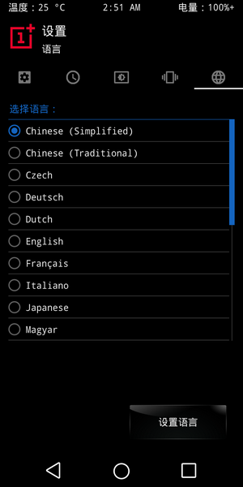
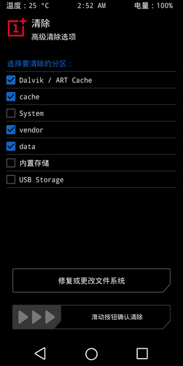
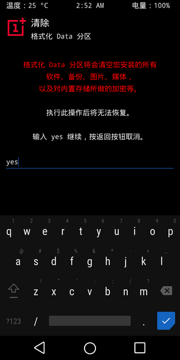
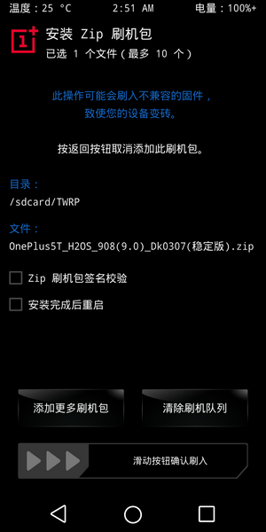
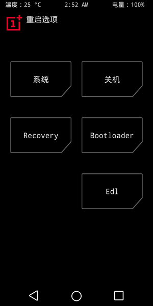

手里的OnePlus 5T是2017年买的，到现在已经快三年了，这个被誉为刷机小王子的机型，直到现在都还有各种第三方ROM在更新，但是从2017年的安卓7.1到2020年的安卓9，甚至更新的安卓10，感觉没有精力去折腾刷机了，准备刷一个稳定的9.0版本养老了。
前言
5T毕竟是三年前的手机了，一直追求最新的系统也没什么意义，个人觉得最多升到安卓9.0就够了，安卓10不打算去尝试折腾了，拿来做个日常打打电话、聊聊天、扫码付款的工具不香吗。
准备
OnePlus 5T手机，连接性好的数据线
刷机工具
1.一加社区工具箱
2.刷机包
链接：https://pan.baidu.com/s/101HbzSdZ-yEIgELPNC4Axg 提取码：unxp
其他第三方ROM合集 https://www.qzyun.net OnePlus ROM文件夹中
PS：手机解锁使用工具箱2.2.1版本，自带的TWRP仅支持7.1~8.1的刷机，9.0后建议使用全能工具箱。ROM建议使用DKRom，这个是官改版，比较稳定，自带的DK设置也有一些很方便的功能。网盘中安卓7.1,8.1,9.0版本都有
刷机前常见问题
无法连接上手机
1.检查数据线连接性是否良好
2.电脑安装驱动（工具箱内一加驱动和谷歌ADB驱动都要装）
3.一些电脑使用USB HUB，或者有些接口被屏蔽导致无法连接，只能换电脑解决
刷机方法优先级
Rec→Fastboot→9008
一加手机只要不瞎折腾是不会轻易刷成砖的，只要刷入了TWRP就可以随意刷系统，而只要能进Fastboot，就能刷入TWRP，9008作为最后的救砖手段，没事别一上来就用9008刷机。
开始刷机
折腾刷机前必须先解BL锁（使用工具箱2.2.1解锁）
1.手机进入Fastboot模式，数据线连接上电脑
2.电脑打开一加工具箱，先选择检查手机连接状态
3.连接正常则选择刷入官方TWRP，输入结束后手机会重启并进入TWRP
4.进入TWRP后默认是英文界面，会询问是否保持System只读，直接滑动滑块更改就是，可以在Setting里修改语言为中文

5.刷系统前先清理一下文件，防止文件出现冲突导致之后刷入系统后出现bug，可以选择三清，四清，或者五清，图中为四清

6.清理文件后电脑上的手机储存盘符会消失，这时候需要格式化data，重新插拔一下数据线，格式化后手机别重启

7.格式化data后就可以在电脑上将ROM包复制到手机储存中开始刷机（OTG优盘也可以），点击安装-选中复制进去的ROM包-滑动滑块刷入，之后直接重启即可进入系统

注意：清除数据后没刷入系统不要重启，如果实在要重启，可以在TWRP重启，选择重启到REC或者Fastboot，EDL为9008刷机模式
